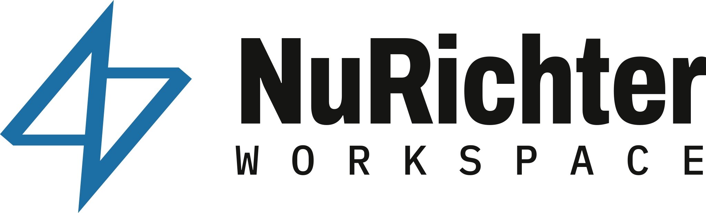
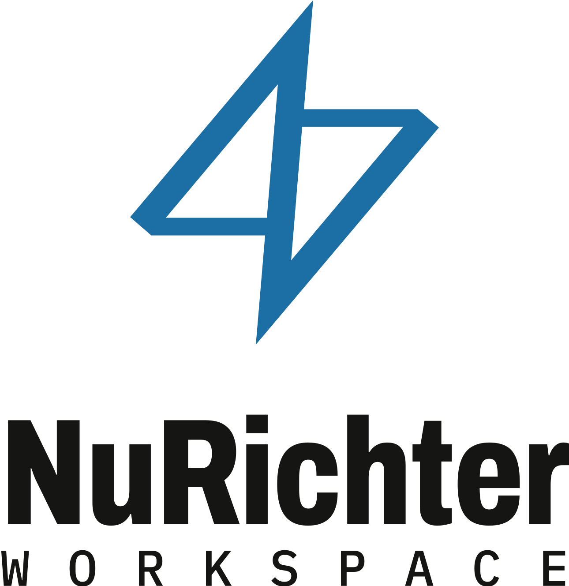
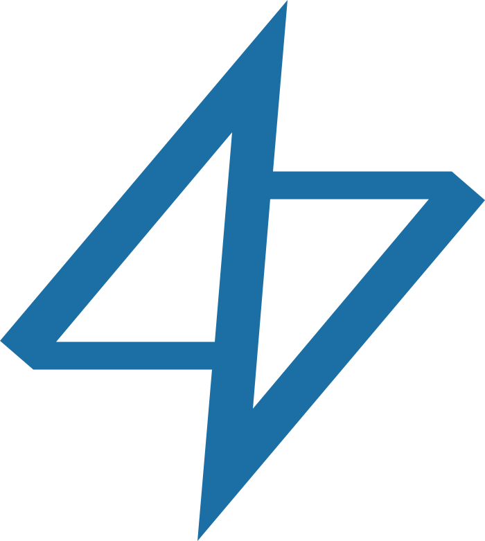
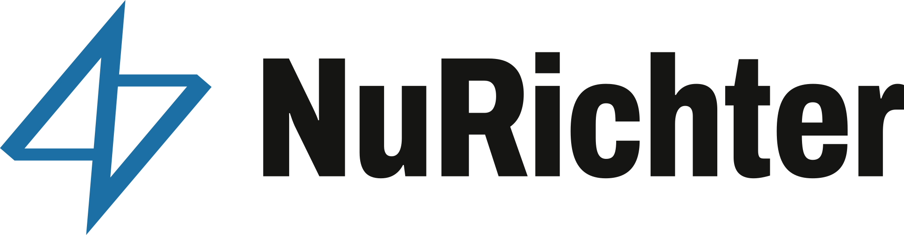

Identitas brand
Satu mark, dua warna, dua keluarga huruf. Halaman ini untuk rekan media, mitra, dan siapa pun yang perlu memakai logo NuRichter dengan benar.
Mark
Nama NuRichter diambil dari skala Richter: alat untuk membaca guncangan dan menuliskannya sebagai angka. Mark-nya dua segitiga yang disatukan satu batang miring, terbaca sebagai petir sekaligus lonjakan seismogram.
Bentuknya simetris putar 180°: diputar setengah lingkaran, ia tetap sama. Tidak ada awal dan akhir, seperti moto Richterize the Infinity.
- 700 × 781
- unit kotak dasar
- 180°
- simetri putar
- 40 u
- tebal batang horizontal
Logo








Beri ruang kosong minimal seperempat tinggi mark di setiap sisi. Jangan meregangkan, memutar, memberi gradien, atau mengganti huruf logo.
Warna
-
Richter Blue#1C6FA5 · RGB 28 111 165Mode gelap: #5AA7DD
Warna utama: mark, tautan, tombol utama.
-
Infinity Violet#8C52FF · RGB 140 82 255Mode gelap: #A47BFF
Energi: status aktif, puncak gelombang, sorotan. Dipakai hemat.
-
Ink#151513 · RGB 21 21 19Mode gelap: #ECEBE6
Teks dan garis gambar.
-
Drafting Paper#F1EFE9 · RGB 241 239 233Mode gelap: #0F0F0E
Latar utama, kertas gambar teknik.
Tipografi
Display · Archivo ExtraBold 72%
Richterize 0123
Teks · Archivo Regular
Wellsense membaca sepuluh aliran sensor sumur lepas pantai dan menandai anomali sebelum produksi hilang.
Label · IBM Plex Mono Medium
LEMBAR W · REV 2026.10
Kedua huruf berlisensi SIL Open Font License dan disertakan di brand kit.